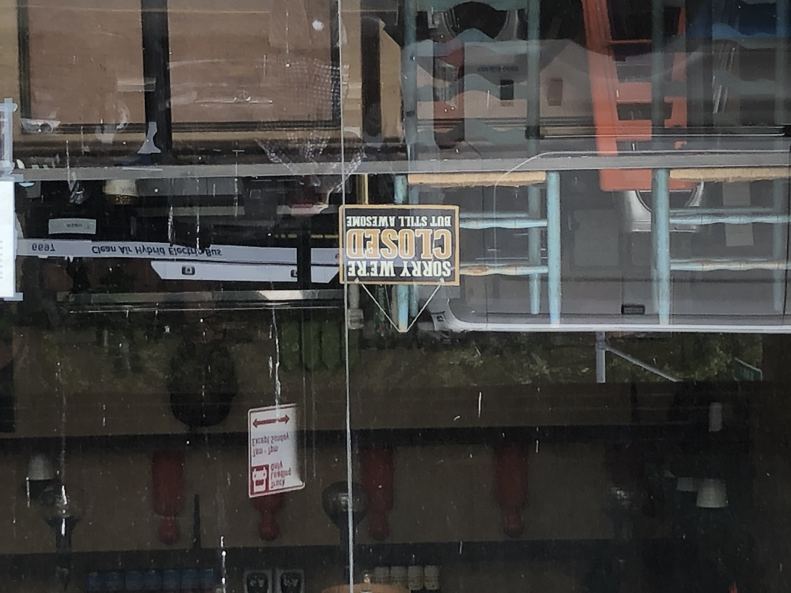
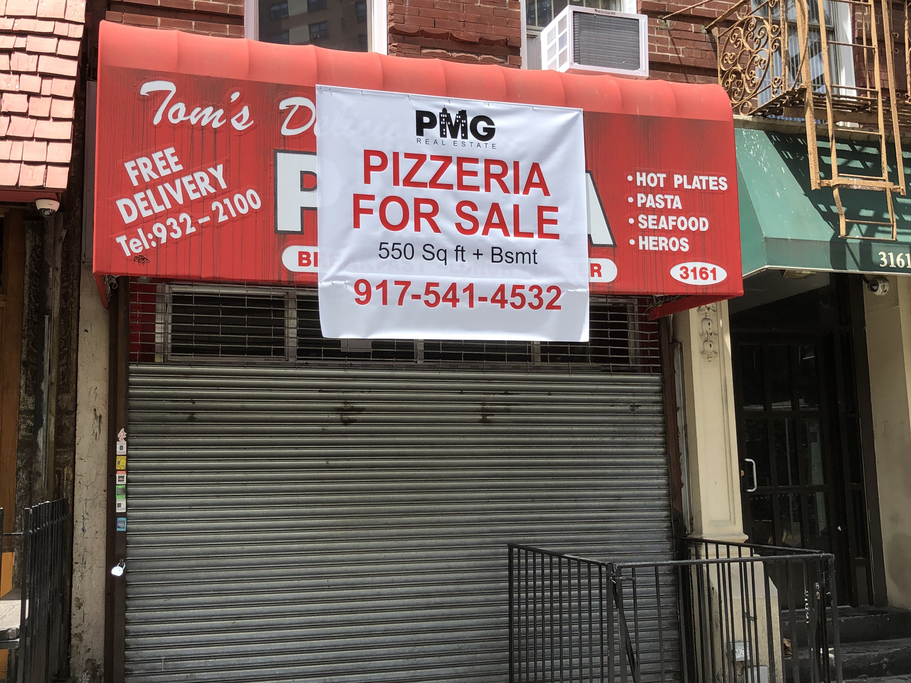

morningsidemutualaid@gmail.com ◆ (518) 723-0154
Hello! We are a network of neighbors living in upper Morningside Heights who have self-organized to help and support each as we weather the coronavirus crisis and beyond.
We have neighbors standing ready to assist you with a range of tasks and services including, but not limited to:
Privacy Policy: We understand that you may be uncomfortable sharing personal information online. We are committed to data privacy and will only collect information necessary for provding assistance. Only the coordinator and person helping will have access to your information and your info will be deleted once the task is complete.
Glad to have you! We have a Google Group listing everyone who's involved. Please fill out this form, email us at morningsidemutualaid@gmail.com, or call (518) 723-0154.
In an addition to one-on-one support, we also have several standing committees:
Please contact us if you're interested in joining, or just learning more about, one of these committees.
If you have the means to do so, please consider financial contributions, 100% of which are used exclusively for the support of community members. Tax-deductable donations can by made on our ioby.org page.
From restaurants to delis to hardware stores, mom-and-pop businesses in our neighborhood are being especially hard hit by the statewide closings instituted as a result of the coronavirus. Though those measures are slowly being lifted, the economic suffering sustained by such enterprises and their employees will be ongoing.
If you are able to do so, please consider supporting local small businesses financially, so they can continue to serve the community after this crisis passes. Here is the link to a spreadsheet containing selected local businesses with their status and, in some cases, owners' and employees' suggestions on how best to support them. We will do our best to keep it current. If you have firsthand information, feel free to add to the chart.
In addition, Columbia University maintains a webpage with a list of local food businesses open for takeout and deliveries to Columbia-owned buildings and, by extension, the local community.
We are a mutual aid group, which means that we are a non-hierarchical organization that does not distinguish between those offering assistance and those receiving resources. We recognize that all of our neighbors can contribute to the community in different ways.
While none of us can know how this health crisis — and the longer-term damage caused by it — will play out, we do know that we'll all be better off if we come together to help each other. This website exists as a place where neighbors can connect to provide and receive a range practical services and emotional support — quickly and on an as-needed basis.
Here, we also provide access to the latest facts about the coronavirus, ideas about how to support local businesses and links to organizations in the larger Morningside and New York City community that might be of help.
Currently, we have roughly 75 members who mostly live between Broadway and Riverside Drive, between 122nd and 125th streets, but we are open to expanding and to welcoming neighbors from the surrounding areas.
If you have any questions or suggestions about this webpage, please email clayton.h.sanford@gmail.com.